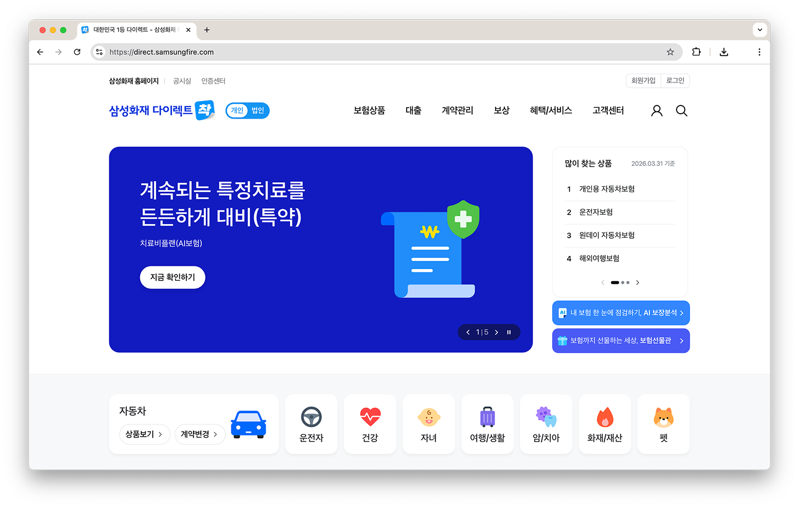
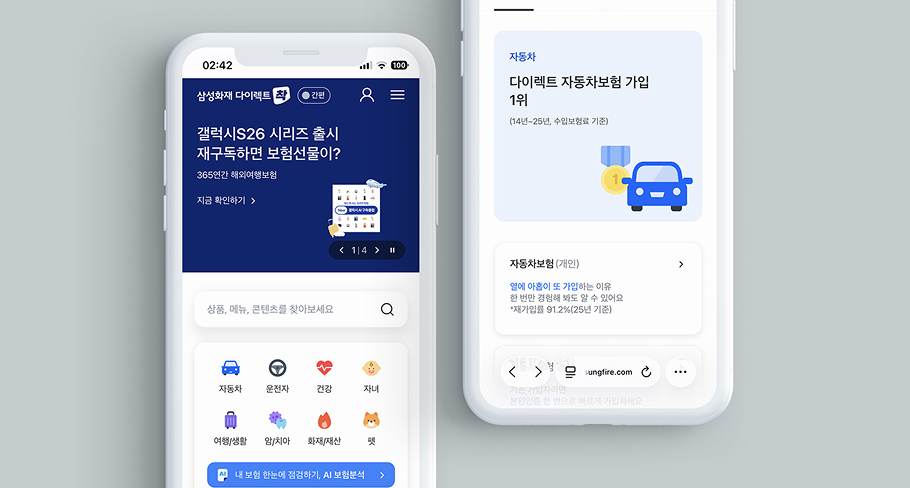
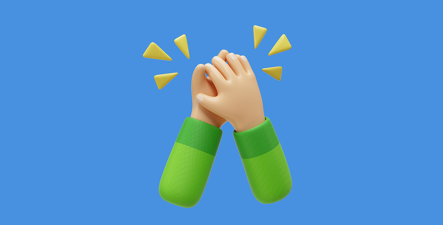

삼성화재
2025
Overview
삼성화재 다이렉트 착은 고객이 다양한 보험 상품을 온라인에서 직접 비교하고 가입할 수 있는 삼성화재의 다이렉트 보험 플랫폼입니다.
기존 소스를 유지한 상태에서 UI 개선과 기능 확장이 요구되는 프로젝트였기 때문에 신규 작업은 별도 파일로 분리해 우선 적용하여 리스크를 최소화했습니다.
이를 통해 안정성을 유지하는 동시에 더 나은 사용자 경험을 제공할 수 있었습니다.
Work Detail
Tech Stack
Tool

기존 소스 기반의 스타일 및 구조 개선
기존 소스를 유지하며 개편을 진행해야 하는 상황에서 신규 작업을 별도의 파일로 구성하고 우선 적용되도록 작업했습니다.
이를 통해 소스가 복잡하게 얽히지 않으면서도 안정적으로 기능을 확장할 수 있었습니다.
프로젝트 안정화 관리
PC와 Mobile의 이슈 개선 및 QA 대응 작업을 담당했습니다.
Confluence에 등록된 수정 요청을 작업하고 관리하며 구조를 재점검하고 서비스의 일관성과 유지보수성을 개선했습니다.

적응형 웹 퍼블리싱
본 프로젝트는 적응형 웹사이트로, PC와 Mobile 작업자가 분리되어 진행되었습니다.
동일 콘텐츠 기준으로 공통화가 가능한 부분을 Mobile 담당자와 협업하며 조율하며 작업했습니다. 중복 작업을 최소화하며 일관성을 확보할 수 있었고, 이를 통해 향후 유지보수를 효율적이고 원활하게 수행할 수 있도록 했습니다.

커뮤니케이션 역량 강화
본 프로젝트는 파견 형태로 진행되어, 기존 기획자를 통해 이루어지던 간접 소통과 달리 고객사와 면대면 및 유선으로 직접 커뮤니케이션하는 경우가 많았습니다.
개발 단계에서 문제가 발생하지 않도록 구현 가능 여부를 사전에 판단하고 작업 시 각 파트 담당자와 조율하는 데 집중했습니다. 구현이 어려운 사항에 대해서는 기술적 제약과 대안을 명확히 설명하는 등 비개발 직군도 쉽게 이해하실 수 있도록 소통했습니다.
그 과정에서 상황에 적합한 전달 방식을 고민하며 소통 역량을 강화할 수 있었습니다.
다음 프로젝트
현대백화점그룹 채용